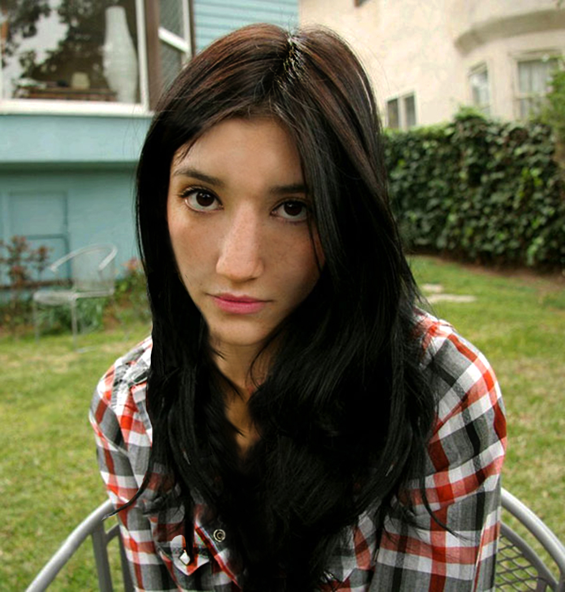
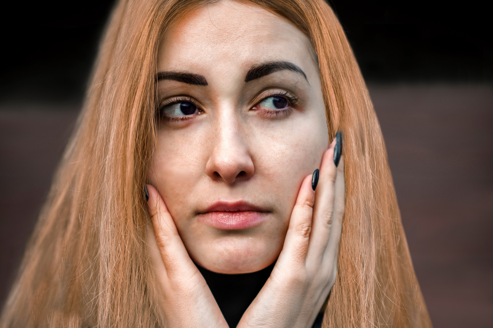
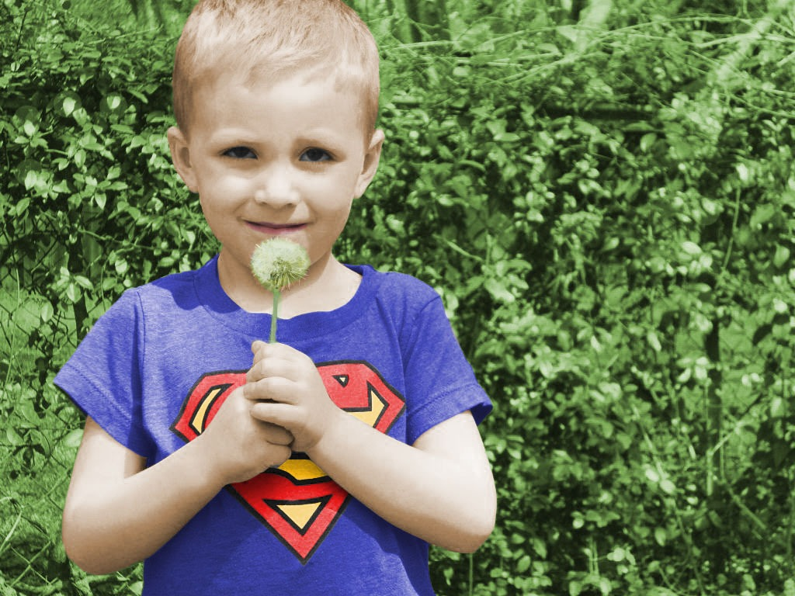
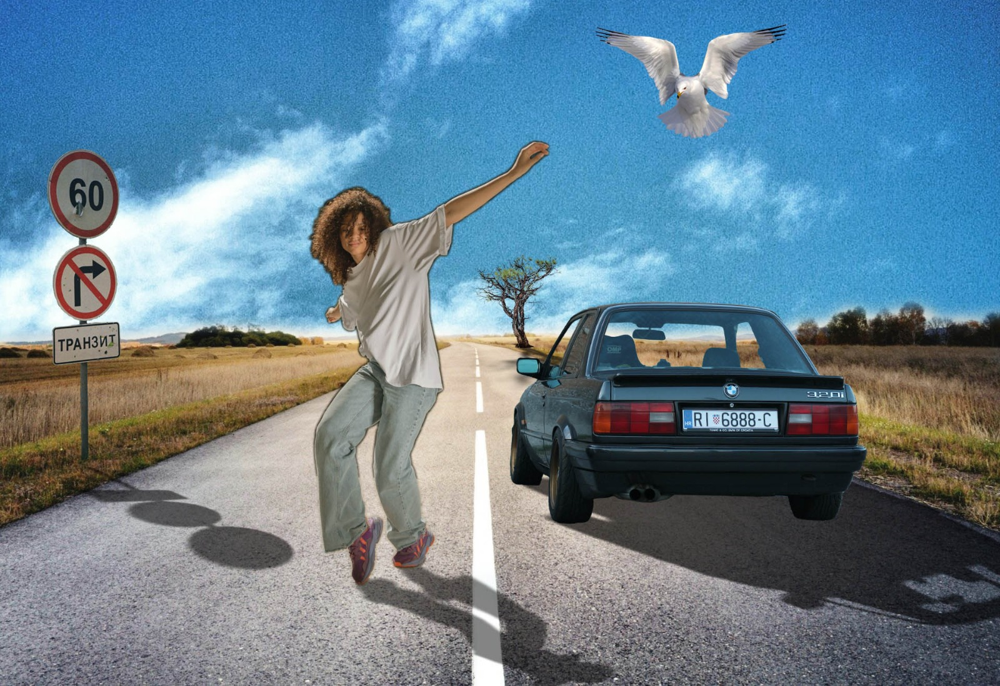
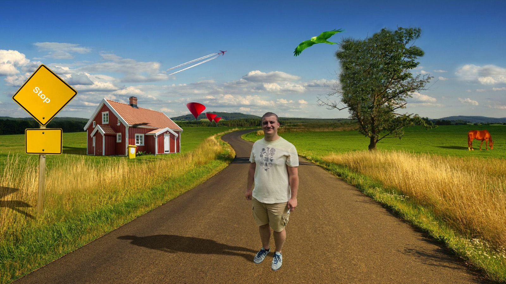

Vježba 2: Bezierova krivulja
Crtanje Bezierovih krivulja u vektorskim programima u zadanom koordinatnom sustavu. Definiranje sivog tona za ispunu i obrub objekata; debljina linije. Definiranje slojeva (layers) i automatsko crtanje objekata između zadanih objekta Pretvaranje teksta u objekte i izrezivanje maski.

Vježba 3: Boja i transformacije
Zadatak je bio napraviti primjer sa multipliciranim objektima nacrtanima sa alatom Pen. Objekte crtamo ili kao konture odabrane slike predloška ili slobodno nacrtanima bez predloška. Tehnikama kopiranja tipkom Alt (Duplicate) više puta kopiramo oblike, apliciramo drugačijim bojama kreiranim u novoj Color grupi (Swatch) sa barem pet novih boja. Koristimo rotacije, scale, transparenciju, multipliciranje oblika…

Vježba 4: Gradijenti
U vježbi se obrađuje tema izrade složenih objekata koji se sastoje od više staza metodama spajanja (Unite/Compound path) ili oduzimanja oblika (Difference/Subtract). Apliciranje različitih vrsta gradijenata (linearni, radijalni, mesh...) od dvije ili više boja. Transparencija i poredak slojeva u izradi složene grafike.

Vježba 5: Retuširanje
Tehnike digitalnog retuširanja fotografija za postizanje realističnog efekta Koristili smo selekcije (Lasso Tool) i uklanjali nedostatake na slici sa zamućivanjem (Dust&Scratches, Median) o kloniranjem (Clone Stamp, Heal...) i kopiranjem selekcije u layere te sproveli lokalne i globalne korekcije boja.
 Vježba 6: Koloriranje
Tehnike neinvazivnog koloriranja slike koje se može primijeniti na crno-bijele slike ili slike u boji kojima želimo promijeniti nijansu određenih područja. Selekcijom željenih dijelova slike stvaramo maske kojima skrivamo ili otkrivamo efekte kolorizacije. Boja se aplicira na zaseban sloj (layer) kako ne bismo uništili originalne tonove i kako bismo mogli lakše napraviti promjene u kasnijim fazama obrade slike. Selekcije se izvode i popravljaju ručno kako bi što preciznije izdvojili željenu boju iz pozadine jer o tome najviše ovisi kvaliteta slike.
Vježba 7: Fotomontaža
Cilj fotomontaže je kombiniranje više fotografija izrezivanjem dijelova različitih slika i spajanjem u jednu cjelinu. Kvalitetno selektiramk dijelove koje želimo izrezati kako bi se što bolje uklopili u finalnu sliku. Imamo tehnike selektiranja jednostavnih i složenih oblika. Jednostavne tehnike selekcije uključuju alate kojima selektiramo poligone i oštre rubove objekata, a složenije tehnike selekcije podrazumijevaju selekciju putem kanala slike ili crtanje maski brush i eraser alatima u modu quick mask. Vježba se bavi i izradom i uklapanjem sjena objekata koje smo uvezli izrezivanjem i korekcijom boja kako bi se pojačao dojam realističnosti.
 